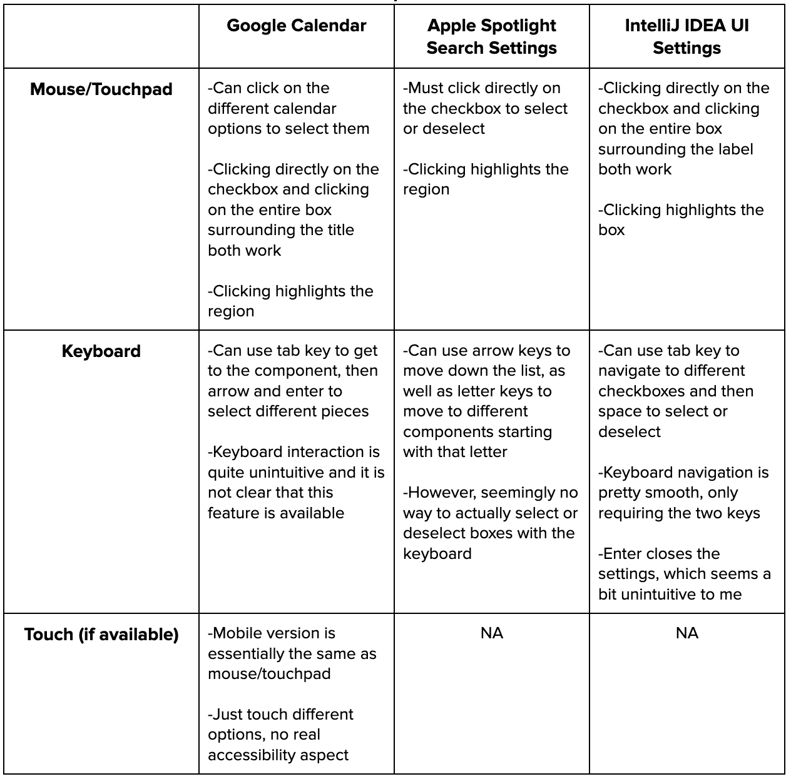

Accessible Components
Overview
For this assignment, I chose to examine checkboxes from three different applications. The three sources I chose were Google Calendar, Apple Mac Spotlight Search settings, and IntelliJ IDEA UI settings. I wanted to examine the different ways that users could interact with these components, and then think about revisions that I felt could be made to improve the design and user accessibility.
Google Calendar

Spotlight Search Settings

IntelliJ IDEA UI Settings
Each of these photos demonstrate applications with the same general functionality, yet there are key differences in the ways in which users can interact with them. I will highlight these below.
User Input / Application Output Comparisons
Inputs
Outputs
Interestingly, despite key differences in the inputs and outputs from user interaction, the screen reader does essentially the same thing for all of the different applications. It alerts the user of the checkbox label as well as its status: checked or unchecked. The screen reader only reads when the user actually clicks, however. I would like to see expanded functionality where the screen reader reads based on hover state as well so the user knows where they are at in the boxes.
State Diagrams
Based on the above observations, we can now create state diagrams that represent the flow of user input and application output. I will be focusing my diagrams around the Apple Spotlight Settings.
Mouse User
Keyboard User
Observations
With these state diagrams, there are some key changes I would like to make. For example, I think a hover effect should be added for mouse users. I also do not think it should matter where you click, the checkbox should always be toggled. Lastly, for keyboard users, pressing the space bar on an active box should toggle the checkbox.
Mouse User Revised
Keyboard User Revised
Revised Component
Based on my above state diagrams, I have chosen to modify the Apple Spotlight Settings as seen below.
- New hover state so the user knows when it is over an element
- While not clear, space would now act the same as a mouse click for accessibility
- Clicking anywhere in region engages active state, toggling checkbox
- This means that mouse users cannot get the active state effect without toggling, but it makes it more accessible and easy to use
Default
Hover
Clicked
Reflection
- The components I observed all had relatively minimalistic designs, making them easy to use and interact with. I tried to keep this in mind while redesigning, making sure that the componenet had a clear purpose.
- Apple Spotlight settings did not have any form of hover state or means by which a user could click on an element with the keyboard. I fixed this so that it should be easier for users to navigate and see which option they were over.
- I tried to address a "mismatch" in visual impairment with my hover effect, which makes it easier for users to know where their cursor is.
- The lack of "clicking" functionality on the keyboard for the Spotlight settings makes the settings inaccessible for keyboard users. On the contrary, I think that the hover effects present for both Google calendar and IntelliJ settings help users with visual impairment.
- Based on what I've observed, it seems mouse users are considered most when designing components. This may lead to missing functionality for other users; for example, Spotlight settings not even having a way to select an element with the keyboard.